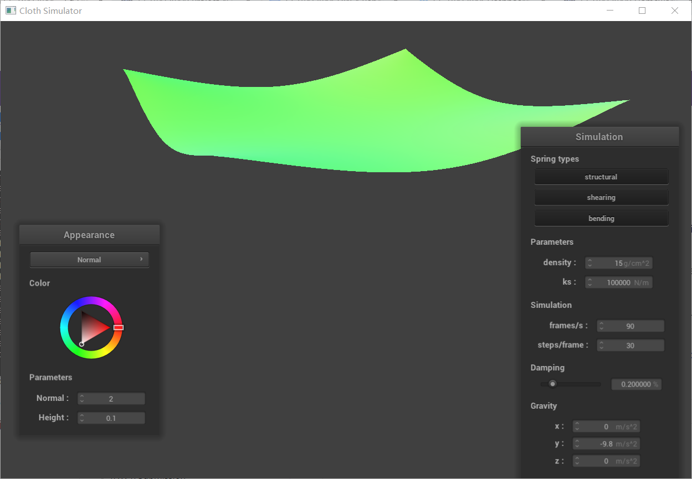

CS 184: Computer Graphics and Imaging, Spring 2023
Project 4: Cloth Simulator
JIAN YU, XIAOYU ZHU
Overview
In Project 4 of CS 184, we created a realistic cloth simulator. Our implementation involved constructing a mesh of interconnected point masses, handling collisions with spheres and planes, and preventing self-collisions for a natural draping effect. Using shaders, we achieved realistic rendering under various lighting conditions.
Part 1: Masses and springs
Overview of implemention:
Grid Generation
Create a grid of point masses with dimensions
num_width_pointsbynum_height_points, representing the width and height of the cloth.Orientation:
HORIZONTAL: Set all masses' y-coordinate to 1. Evenly distribute them across the xz-plane, starting at (0, 0) for the top-left mass and ending at (
width,height) for the bottom-right mass.VERTICAL: Introduce a small random z-offset (-1/1000 to 1/1000) for each mass. Evenly distribute them across the xy-plane.
Pinning:
Iterate through the
pinnedvector. If a mass's (x, y) index matches an entry inpinned, set itspinnedboolean totrue.
Storage: Add the point masses to the
point_massesvector in row-major (x-axis) order.
Spring Connections
Structural: Connect each mass to its adjacent neighbor to the left and to the one directly above it with structural springs.
Shearing: Connect each mass to its diagonally upper-left and upper-right neighbors with shearing springs.
Bending: Connect each mass to the mass two positions to its left and the mass two positions above it, using bending springs.
for three kinds of connections listed above, if the point is on the edge, skip it.
Screenshots of pinned2.json with all constraints without shearing constraints with only shearing constraint Part 2: Simulation via numerical integration
Comparison image with low and high ks:
| low ks(1e-05) | high ks(1e05) |
|---|---|
|  |
Explaination:
ks represents the stiffness of the springs in the simulation, governing the elasticity and deformability of the cloth.
Low ks:
The cloth becomes loose and easily stretches and deforms. External forces like gravity cause significant deformation, with the cloth drooping considerably.
The cloth takes longer to settle, exhibiting noticeable oscillations that take time to dampen.
High ks:
The cloth becomes stiff, rigid, and resists deformation strongly. Sagging is reduced, and the cloth maintains its shape better.
The cloth settles much faster, with minimal oscillations.
Comparison image with low and high density:
| low density(1) | high density(10000) |
|---|---|
Explaination:
Density determines the mass per unit volume of the cloth. In the simulation, it directly affects how much each point mass weighs.
Low Density
Lightweight: The cloth behaves as if made from a very light, thin material.
Fluttering and Air Resistance: The cloth is easily affected by forces like wind, leading to fluttering and pronounced reactions to air resistance.
Faster Movement: The cloth accelerates and moves faster in response to forces because it has less inertia.
Quick Settling: After disturbances, a low-density cloth tends to settle more quickly.
High Density
Heavyweight: The cloth behaves as if made from a dense, thick fabric.
Less Flutter; More Draping: Wind and air resistance have less noticeable effects. The cloth tends to drape more heavily under gravity.
Slower Movement: The increased inertia makes the cloth move more slowly in response to forces.
Longer Settling Time: A high-density cloth will take longer to come to rest after being disturbed.
Comparison image with low and high damping:
| low damping(0) | high damping(1) |
|---|---|
Explaination:
Damping is a force that opposes the velocity of an object, acting to slow it down. In cloth simulations, damping simulates energy loss due to internal friction within the fabric and air resistance.
Low Damping: Cloth will oscillate for a long time, exhibiting a springy and lively behavior.
High Damping: Cloth settles quickly and oscillations damp out fast, leading to a less bouncy and more stable appearance. Excessive damping can make the cloth appear overly stiff and unrealistic. Also, high damping can make the cloth feel less responsive and sluggish, as it reacts slowly to external forces.
Images of default state
Part 3: Handling collisions with other objects
Overview of implemention
In the
Sphere::collidefunction:Distance Check: Determine if the distance between the point mass and the sphere center is less than the sphere radius.
Tangent Point Calculation: If the point mass is inside the sphere, calculate the intersection point between the line connecting the point mass's last position and the sphere center and the sphere surface.
Position Correction: Move the point mass's last position towards the tangent point and scale the displacement by the friction coefficient.
Position Update: Set the point mass's new position to the corrected position.
In the
Cloth::simulatefunction, iterate over all point masses and perform collision detection between each point mass and all spheres.
| cloth on sphere with different ks(500,5000,50000) |
|---|
Discreption：
A smaller ks value indicates weaker springs, making the cloth more easily stretched or compressed. This means the cloth will be more influenced by gravity and other external forces, resulting in closer draping against the sphere.
A larger ks value corresponds to stiffer springs, making the cloth harder to stretch or compress. This translates to a more rigid and supportive cloth that tends to retain its shape.
plane collision:
Part 4: Handling self-collisions
Screenshot of falling cloth
Screenshot of falling and rest state with different ks and density
| ks = 5000, d = 1 | ||
|---|---|---|
| ks = 5000, d = 100 |  | |
| ks = 75000, d = 15 | ||
| ks = 10, d = 15 | ||
| ks = 5e+6, d = 100 |  |  |
Density
Low Density: Lightweight, thin fabric, like silk scarf. Flutters more easily, and folds tend to be less pronounced. The cloth collapses on itself in a looser, more spread-out manner.
High Density: Heavier, thicker fabric, like a blanket. Drapes heavily, and folds are more distinct and weighty. The cloth will pile up more readily, creating denser, overlapping sections.
Spring Constant (ks)
Low ks: Soft, stretchy fabric. The cloth easily compresses and forms loose, flowing folds. The overall draping will be less rigid, allowing the cloth to conform and pile up easily.
High ks: Stiff, less elastic fabric. The cloth resists folding tightly and will tend to maintain larger, more open folds with less compression where it overlaps itself.
Combined Effects
| Low | Low | Very soft flowing fabric, collapses readily, loose folds. |
|---|---|---|
| Density | ks | Behavior |
| Low | High | Lightweight, but less elastic. Forms more open folds. |
| High | Low | Heavy fabric that stretches and compresses easily. Thick, bunched up folds. |
| High | High | Stiff and heavy, drapes in large open folds, minimal collapse on itself. |
An additional observation is that when ks and density change proportionally at the same time, the behavior of the cloth is very similar. We believe the reason is that the main force determining the shape of the cloth is the internal elastic force, rather than gravity or other external forces. Force affects the motion behavior of an object by affecting its acceleration. When ks and density change proportionally, their effects on acceleration cancel each other out, resulting in similar behavior of the cloth. We have confirmed that the images are not misplaced, they are indeed very similar :)
Part 5: shaders
Shader description
A shader program is a piece of code written in a specialized shading language, like GLSL that runs on the GPU . Its purpose is to determine how each pixel (fragment) or vertex of a 3D object should be rendered on the screen.
Vertex shaders are responsible for processing each vertex of a 3D object. They manipulate the position, color, texture coordinates, and other properties of vertices. For instance, they can transform the 3D coordinates of vertices into 2D screen coordinates for rendering on the screen. They can also calculate lighting effects at each vertex.
Fragment shaders, also known as pixel shaders, operate on individual pixels of the rendered image. They determine the final color of each pixel based on various factors such as lighting, textures, and material properties. Fragment shaders calculate the final color by interpolating values from the vertices, applying lighting calculations, texture sampling, and other effects.
Together, vertex and fragment shaders form the core of the rendering process. Vertex shaders prepare the geometry for rendering by transforming vertices, while fragment shaders determine the final appearance of each pixel on the screen by calculating lighting and material effects. By working together, they enable the GPU to efficiently render complex 3D scenes with realistic lighting and materials.
Explaination of Blinn-Phong model
In Blinn-Phong shading, each pixel's color is determined by considering three main components: ambient, diffuse, and specular lighting.
Ambient lighting represents the general illumination in a scene and is constant across all surfaces. It adds a base level of brightness to objects, regardless of their orientation or shape.
Diffuse lighting simulates the way light scatters when it hits a surface. It depends on the angle between the light source and the surface normal, resulting in brighter areas where the surface faces the light directly and darker areas where it faces away.
Specular lighting accounts for the reflection of light off shiny surfaces. It creates bright highlights on surfaces, with the intensity and size of the highlights varying based on the viewing angle and surface roughness.
 |  |
|---|---|
 |  |
Texture mapping shader
It's a photo of us during spring break haha:)
 |  |
|---|
Bump mapping screenshots(using texture_3 provided)
 |  |
|---|
Displacement mapping on sphere:

comparison on resulting renders:
Bump mapping simulates surface irregularities through shading, without changing geometry. Displacement mapping alters geometry based on a texture map. Bump mapping is computationally lighter but less realistic, while displacement mapping is more realistic but computationally heavier.
Comparison of Bump/Displacement coarseness
 |  |
|---|---|
 |  |
| -o 16 -a 16 | -o 128 -a 128 |
Comparison:
When changing the coarseness of the sphere mesh, Bump Mapping won't be affected because it only simulates surface irregularities through shading and doesn't involve changes in geometry. The surface details generated by Bump Mapping will remain consistent regardless of the mesh's coarseness.
However, Displacement Mapping will be affected. Using a coarser mesh (
-o 16 -a 16) will result in fewer and less pronounced surface details because of the limited changes in geometry. On the other hand, using a finer mesh (-o 128 -a 128) will produce more and more pronounced surface details as more vertices are displaced to match the texture's intricacies.
Mirror shader on cloth and sphere
 |  |
|---|